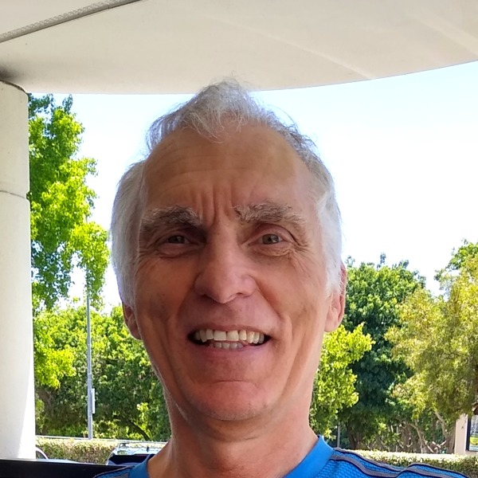

Treat the root cause
Identify and address underlying problems rather than repeatedly treating symptoms.
Independent technical consulting
Wi-Fi problems, unreliable equipment, uncomfortable rooms, high energy bills or an expensive replacement proposal? I investigate root causes and help put practical solutions into action.
I’m Vit “Vitek” Sanek. I provide independent technical assessments, hands-on IT troubleshooting and configuration, and second opinions for homeowners and businesses. You work directly with me.
Identify and address underlying problems rather than repeatedly treating symptoms.
Explore optimization and alternative solutions before costly replacements or upgrades.
Reduce downtime, inefficiencies, recurring problems, and operational frustration.
Make homes and workplaces more energy-efficient, less expensive to operate, more comfortable, and healthier.
I investigate what is actually causing a problem before recommending equipment changes. My advice is not driven by commissions or equipment sales. Where appropriate, I can also troubleshoot, configure or optimize systems directly; when specialist or licensed work is needed, I can help assess the available options.

I’m a physicist by education with decades of hands-on installation, integration, configuration and troubleshooting across IT systems, computer networks and industrial automation. My work also includes bank security systems, cybersecurity and practical building-systems experience. I investigate how systems interact, implement solutions where appropriate and give independent advice when other specialists are needed.
“Vitek’s deep knowledge in many areas and his interdisciplinary approach have been a big competitive advantage – adding value to customers and providing tangible savings for us.”
Doron Korman
Managing Director, Dorkor Ltd · LinkedIn professional recommendation
This is an earlier professional recommendation, not a review of the current California consulting business. More recommendations and selected technical work are on About & Credentials.
Choose the situation closest to yours; you do not need to know the technical diagnosis first.
Wi-Fi dead zones, unreliable devices, uneven heating and cooling, mold that keeps returning, high energy bills, or an expensive solar PV or electrical upgrade proposal.
See homeowner solutions → Businesses & organizationsSlow networks, recurring equipment failures, disrupted operations, industrial automation issues, building moisture, energy costs, or conflicting technical recommendations.
See business solutions →Describe your situation in plain language. The type of assistance and deliverables depend on the issue.
Tell me what is happening, what you have tried, and whether you need troubleshooting, hands-on support or an independent review.
I explain what I can offer, whether the work can be handled remotely or needs a visit, what information is required, and the proposed scope and cost.
We agree on the work and its deliverables before any paid service begins. Depending on the project, I may provide direct technical assistance, verbal guidance or written findings and recommendations.